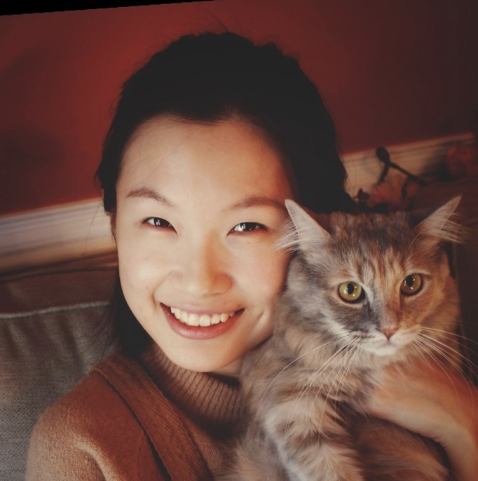
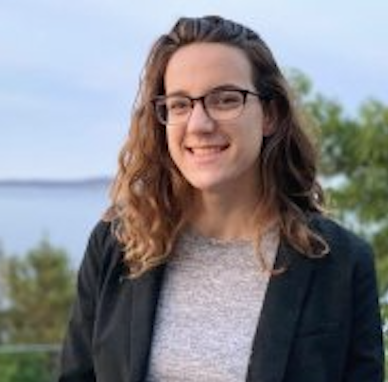
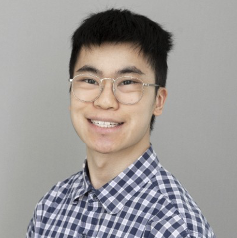
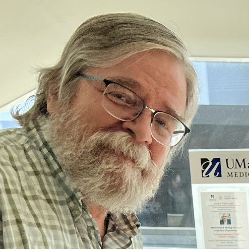

Raluca Gordân, PhD
Principal investigator
Professor and Vice Chair for Education, Department of Genomics and Computational Biology.
Who we are
Our mixed wet-and-dry lab brings together experimental and computational scientists who share a quantitative approach to genome biology.
Principal investigator
Professor and Vice Chair for Education, Department of Genomics and Computational Biology.

Postdoctoral fellow
The interplay between transcription factors and UV-induced damage and repair. dCas9-DNA binding models.
Postdoctoral fellow
Epigenome editing and cellular differentiation. (Joint with Dr. Gersbach and Dr. Crawford; Duke University)

PhD candidate
Allele-specific gene expression and chromatin accessibility. (Joint with Dr. Allen and Dr. Majoros; Duke University)
PhD candidate
Improving epigenome editing efficiency through high throughput and sensitive characterization of dCas9 and dCas12 binding.

PhD candidate
Increased DNA mutagenesis in transcription factor binding sites due to competition with base excision repair.

Research associate
Protein-DNA binding assays. Lab management.
Looking for talented trainees to join our lab.